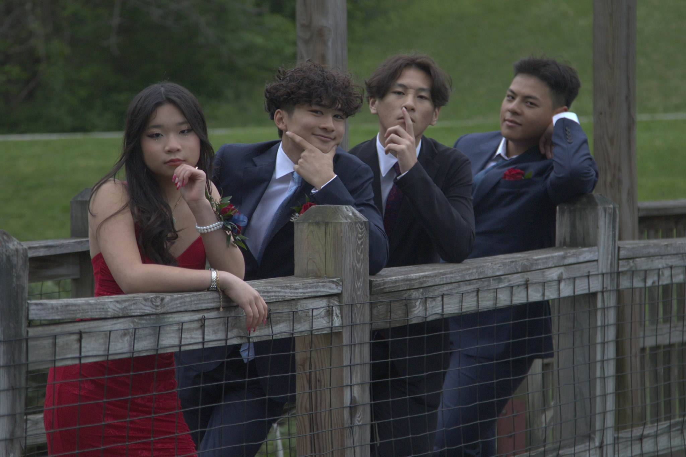

ZACKERY LAU · PHOTOGRAPHY
Shot
and
Framed.
Events, portraits, and the moments in between.
Explore the work ↓SELECTED WORK
People.
Moments.
Stories.
I photograph people as they actually are — laughing, celebrating, working, performing, and simply being together. My focus is on natural moments that still feel intentional when they're framed.
THE GALLERY
Selected photographs



ABOUT THE PHOTOGRAPHER
Photography should feel
like the memory.
I'm Zackery Lau, a photographer focused on events and portraits. I like images that feel lived-in rather than overly staged — the expression between poses, the energy of a room, the people who make an event worth remembering.
WHAT I SHOOT
Events
School events, performances, competitions, celebrations, and everything happening around them.
Portraits
Individual and group portraits that keep personality at the center of the frame.
Stories
Candid coverage for projects, organizations, and moments where the people matter most.
GET IN TOUCH
Have something
worth framing?
Add your email or Instagram in script.js to activate the contact button.